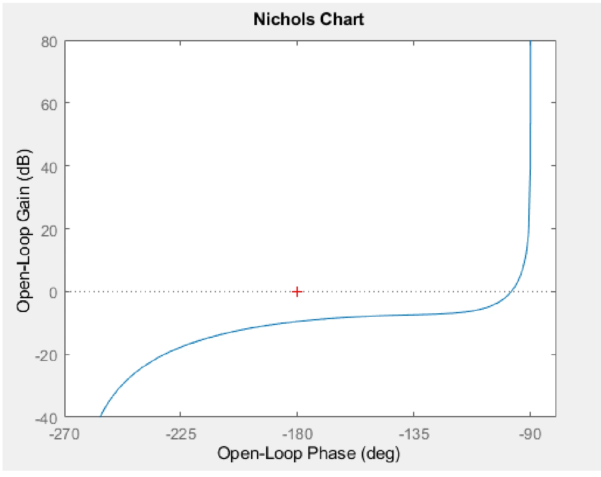
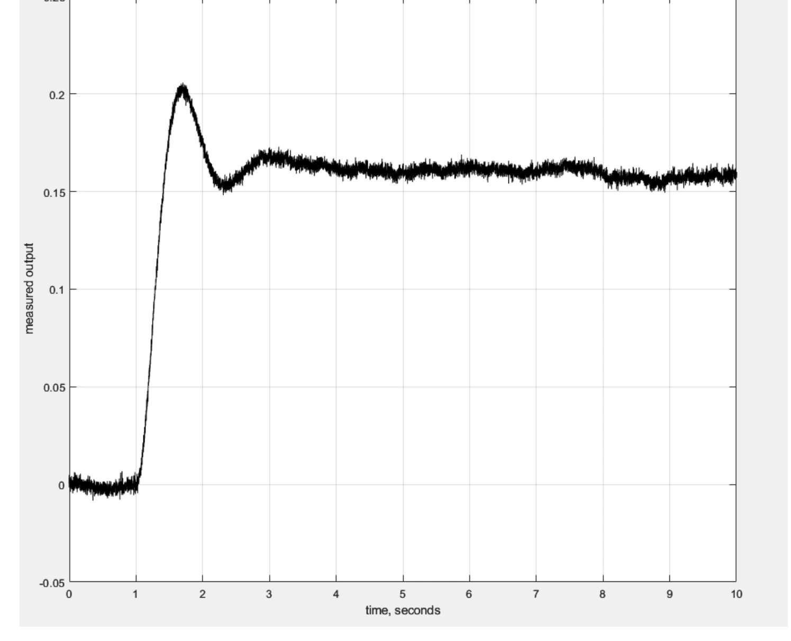
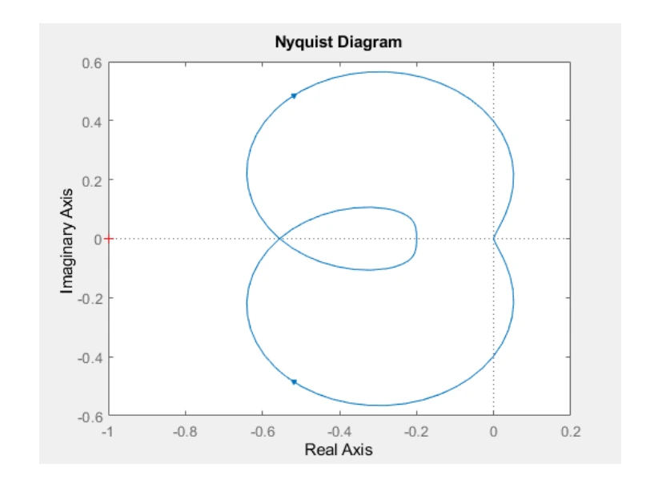
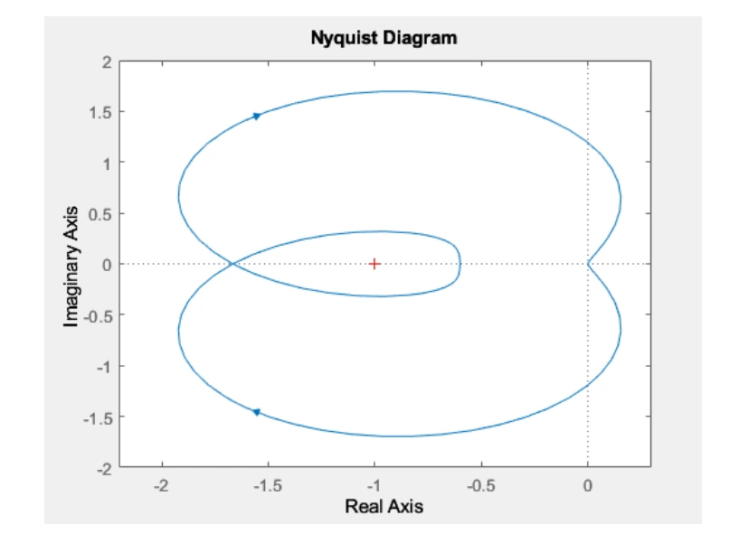

Source: AE511_HW7.pdf (4 pages). This assignment is about selecting appropriate \(L\), \(S=1/(1+L)\) and \(T=L/(1+L)\), not blindly choosing controller gains.
Problem 1.1 — Bandwidth, low-frequency disturbance rejection, and high-frequency noise
This problem is all about going from control system requirements to the requirements on the loop transfer function. You are not going to design control systems but instead create the requirements on the loop transfer function. This should be considered one of the first steps in control design.
1. The closed-loop control system must have a bandwidth of 15 Hz with very little overshoot. Output disturbances at frequencies less than 5 Hz should be attenuated by no less than 1/10. Noise at frequencies greater than 30 Hz should be attenuated by no less than 1/10. List the required quantities:
- crossover frequency
- Desired phase margin and gain margin (choose values from those given in class).
- Bounds on \(L(j\omega)\) that can be derived from any constraints given in the problem.
Translate time specifications to crossover/margins and noise/disturbance bands to exact S/T inequalities.
Worked solution — answered by question part
Part (1) — Crossover frequency for the bandwidth target
The required closed-loop bandwidth is 15 Hz, corresponding to \(\omega_B=2\pi(15)\approx94.25\) rad/s. Gain crossover \(\omega_c\) is often in the vicinity of \(\omega_B\) but is not guaranteed equal to it; a precise choice depends on loop shape. A low-overshoot target motivates a substantial phase margin, e.g. \(PM\ge60^\circ\), and a conventional margin target such as \(GM\ge8\) dB (design choices, not values written into the problem).
Answer: Target crossover near \(\omega_c\sim2\pi(15)\approx94.25\,\mathrm{rad/s}\). The exact crossover depends on loop shape, so this is a design target, not an identity.
Part (2) — Select phase margin and gain margin
For very little overshoot, an illustrative design target is \(PM\ge60^\circ\) and \(GM\ge8\,\mathrm{dB}\). These are chosen design standards rather than unique values implied by the problem.
Part (3) — Derive loop-gain bounds for disturbance and noise
For output disturbances below 5 Hz (\(\omega<31.42\) rad/s), require \(|S(j\omega)|\le0.1\), i.e. \(|1+L(j\omega)|\ge10\). The conservative sufficient magnitude condition \(|L|\ge11\) follows from the reverse triangle inequality \(|1+L|\ge|L|-1\). For noise above 30 Hz (\(\omega>188.50\) rad/s), require \(|T|\le0.1\); \(|L|\le1/11\) is a conservative sufficient condition since \(|1+L|\ge1-|L|\). These bounds prescribe high low-frequency loop gain, a crossover region near the target bandwidth, and small high-frequency loop gain.
Self-check: Are Hz converted to rad/s before evaluating G(jω)?
Problem 1.2 — Suppress an 8-Hz structural mode without affecting rigid body dynamics
2. Lateral vibrations at a frequency of 8 Hz are noticed in the cockpit. A modal suppression controller is desired that uses the rudder to minimize these vibrations by a factor of 1/10 of their original value. The controller should not interact with the rigid body motion of the aircraft (you should take this to mean that the closed loop transfer function T is some "small" amount for frequencies below 8 Hz). Consider the lateral vibrations to be an output disturbance. List the required quantities:
- Desired phase margin and gain margin (choose values from those given in class).
- Bounds on \(L(j\omega)\) that can be derived from any constraints given in the problem.
For modal suppression, shape a narrow band of high loop gain near 8 Hz while keeping |T| small at rigid-body frequencies.
Worked solution — answered by question part
Part (1) — Select meaningful stability margins
A modal controller may use a band-pass filter and phase compensation around the structural mode. Check stability using the full Nyquist contour, as there may be multiple gain crossovers; choosing a single phase margin is not enough.
Answer: Use robust positive phase and gain margins at every gain crossover; for example 60° PM and 8 dB GM where achievable. A local vibration-suppression loop may have multiple crossovers, so also check Nyquist stability.
Part (2) — Set vibration and low-frequency loop-gain constraints
Treat the vibration as an output disturbance at \(\omega_f=2\pi\cdot8\approx50.27\) rad/s. A factor-of-ten reduction means \(|S(j\omega_f)|\le0.1\), or \(|1+L(j\omega_f)|\ge10\). To avoid affecting the low-frequency rigid-body response, require \(|T(j\omega)|\) small in the designated lower-frequency range, which in turn requires \(|L|\) small there. This is not compatible with a simple monotonically decreasing high-gain loop from DC. The design needs a band-limited resonant/modal control loop with elevated gain near 8 Hz, small gain below the mode, and adequate phase margin around the local crossover(s).
Self-check: Is the modal disturbance an output disturbance rather than reference?
Problem 1.3 — Pitch control, overshoot, rise time, and no gust degradation
3. The desired pitch response of an aircraft has an overshoot less than 20 percent with a rise time of approximately 2 seconds (note that these are just made up numbers). The steady state error should be small. The closed loop control system should not degrade the pitch response to a gust disturbance in any frequency range. List the required quantities:
- crossover frequency
- Desired phase margin and gain margin (choose values from those given in class).
- Bounds on \(L(j\omega)\) that can be derived from any constraints given in the problem.
Connect overshoot/rise-time goals to margin and crossover choices; distinguish the no-gust-degradation requirement.
Worked solution — answered by question part
Part (1) — Estimate crossover for the two-second rise
A two-second rise suggests a crossover of order \(\omega_c\sim0.9\) rad/s under the common \(t_r\approx1.8/\omega_c\) approximation. Choose a healthier \(PM\) of roughly \(60^\circ\) and \(GM\ge8\) dB; make \(|L(0)|\) large, or include integral action, to reduce steady-state error.
Part (2) — Choose margins for less than 20% overshoot
Less than 20% overshoot corresponds to an approximate second-order damping lower bound from
Answer: Damping of about \(\zeta\ge0.456\) is the textbook second-order threshold; a phase margin around 60° and gain margin around 8 dB are sensible design targets, subject to full-plant verification.
Part (3) — Bound loop gain for step error and gust rejection
“No disturbance degradation at any frequency” is a stringent condition \(|S(j\omega)|\le1\) for all \(\omega\), equivalent to \(|1+L(j\omega)|\ge1\) everywhere. It may be impossible for nontrivial causal stable loop shapes because sensitivity peaks are constrained by Bode-integral/waterbed tradeoffs under common assumptions. State that feasibility depends on plant constraints and offer a weighted bound (e.g. \(M_s\le1.5\)) when permitted rather than silently asserting an impossible perfect suppression.
Answer: Keep \(|S(0)|\) small for steady-state tracking and avoid large disturbance sensitivity peaks; strictly requiring \(|S(j\omega)|\le1\) at every frequency may be infeasible for a practical loop.
Self-check: Does the steady-state error bound use S(0)?
Problem 2 — Improve low-frequency disturbance rejection with a Nichols loop shape
Consider the nominal loop transfer function shown in the figure below.

- Draw on the figure a loop shape that will achieve greater disturbance rejection at frequencies below the crossover frequency (there is no single correct answer for this problem).
- Propose a control structure to achieve the desired loop shape shown in step 1. That is, choose \(C\) such that \(L_{new}=C\cdot L_{nominal}\), where \(L_{nominal}\) is the original loop shape and \(L_{new}\) is the loop shape proposed in step 1. You can assume the crossover frequency is 1 rad/s.
Move the low-frequency Nichols locus up without destroying the 0-dB crossing. Select a lag or integral-type structure.
Worked solution — answered by question part
Part (1) — Sketch a loop with stronger low-frequency disturbance rejection
The nominal Nichols diagram is supplied visually. To reduce output disturbances below the stipulated \(1\)-rad/s crossover, increase \(|L|\) at low frequencies so \(|S|=1/|1+L|\) falls. A lag network is a natural element because it can add relative low-frequency gain while leaving crossover approximately where it was. For example,
Part (2) — Specify a compensator that produces the loop shape
has \(C(0)=1\) and \(C(j\omega)\approx0.2\) at frequencies far above the two breakpoints. To actually raise low-frequency gain while preserving the crossover magnitude, use the rescaled network \(5C_{\rm lag}\), i.e.
which tends to gain 5 at DC and gain 1 near \(\omega\gg0.1\). Check its phase dip below crossover; small additional phase can harm margin if the break frequencies are placed too close to 1 rad/s. The specific numbers are an illustrative valid proposal, not the only possible answer.
Self-check: Does extra low-frequency gain preserve sufficient phase at crossover?
Problem 3 — Estimate a dynamical system from a noisy step response
Consider the step response shown in the figure below. The step response shown is the result of

applying a step with a value of 4. The step occurred at 1 second.
- Using only the step response, estimate the underlying dynamical system.(Hint: You might have to look back at lecture 3 for step response characteristics and maybe lecture 6 for the final value theorem.)
- Draw a rough sketch of the loop transfer function (either Bode, or Nichols is acceptable) needed to achieve a rise time of 2 seconds, less than 5 percent overshoot, and zero steady-state error for a unit step. In this case, rough sketch means highlight the correct crossover frequency, gain margins, phase margins, and the slope.
- What is the controller needed to achieve this loop shape?
Normalize the measured final output by the amplitude-four step, then estimate damping and settling from the observed time axis.
Worked solution — answered by question part
Part (1) — Estimate the plant from the step-response measurements
From the source plot: a step of 4 occurs at \(t=1\) s; the output settles near \(0.16\) and peaks around \(0.20\)–\(0.205\) at roughly \(1.6\)–\(1.8\) s. Thus the DC gain is about \(K=0.16/4=0.04\). The overshoot estimate is \((0.203-0.16)/0.16\approx0.27\), giving damping \(\zeta\approx0.39\). With peak time after the step \(t_p\approx0.7\) s, \(\omega_d\approx\pi/0.7=4.49\) rad/s and \(\omega_n\approx4.88\) rad/s. A rough fitted model is
Part (2) — Sketch the new loop specifications
These are estimates read from a noisy figure, not unique system identification. For the new design, a two-second rise suggests crossover around \(0.9\) rad/s, less than 5% overshoot suggests \(\zeta\gtrsim0.69\) or a generous margin such as \(PM\gtrsim65^\circ\), and zero step steady-state error requires an integrator (Type 1 stable loop). A PI or PI-plus-lead controller is a reasonable structure; choose its gains/zeros by tuning the estimated plant and validating full closed-loop poles and transient performance. There is no unique numerical controller without additional design constraints.
Part (3) — State an appropriate controller structure
Answer: A PI or PI-plus-lead controller is suitable because integral action gives zero steady-state step error for a stable closed loop, while lead action can raise phase margin near the selected crossover. For example, choose a parameterized shape \(C(s)=K(1+\omega_i/s)(1+s/\omega_z)/(1+s/\omega_p)\) with \(\omega_z<\omega_p\) and tune the parameters using the estimated plant. The graph does not uniquely fix those parameters.
Self-check: Is the step amplitude accounted for?
Problem 4 — Nyquist right-half-plane pole counting
These problems will explore the Nyquist Stability Criteria.
1. The Nyquist plot has two counterclockwise encirclements of the point (-1,0). How many closed-loop poles are in the RHP?
2. Using the figure below, if the closed loop system is stable, how many RHP poles are in L(s)?

3. Using the figure below, if the open loop system has one RHP pole, how many RHP poles does the closed loop system have?

Choose a Nyquist encirclement sign convention and write Z=P+N consistently; account for the critical (-1,0) point.
Worked solution — answered by question part
Part (1) — Two counterclockwise Nyquist encirclements
Define \(P\) as open-loop RHP poles, \(Z\) as closed-loop RHP poles, and \(N_{\rm CW}\) as signed clockwise encirclements of \(-1\) by the full Nyquist contour. Under this stated convention,
Answer: With clockwise encirclements counted positive, \(Z=P-2\). Since the problem omits the open-loop RHP pole count \(P\), there is no unique numerical value for \(Z\).
Part (2) — Open-loop RHP pole count when the first loop is stable
Answer: The first supplied Nyquist diagram does not encircle −1. Since the closed loop is stated to be stable (\(Z=0\)), the open-loop RHP count is \(P=0\).
Part (3) — Closed-loop RHP pole count for the second plot
Answer under the arrow directions shown: Both nested traversals about −1 are clockwise, so \(N_{\rm CW}=2\). With one open-loop RHP pole, \(Z=P+N_{\rm CW}=1+2=3\).
Self-check: Is the Nyquist P/N/Z convention stated?